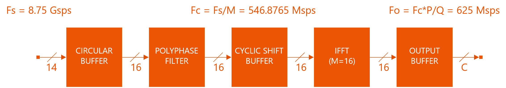
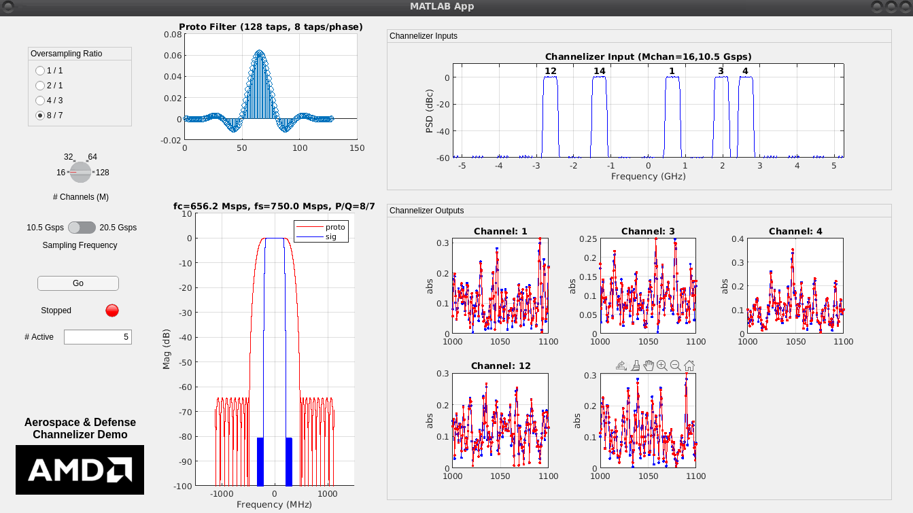
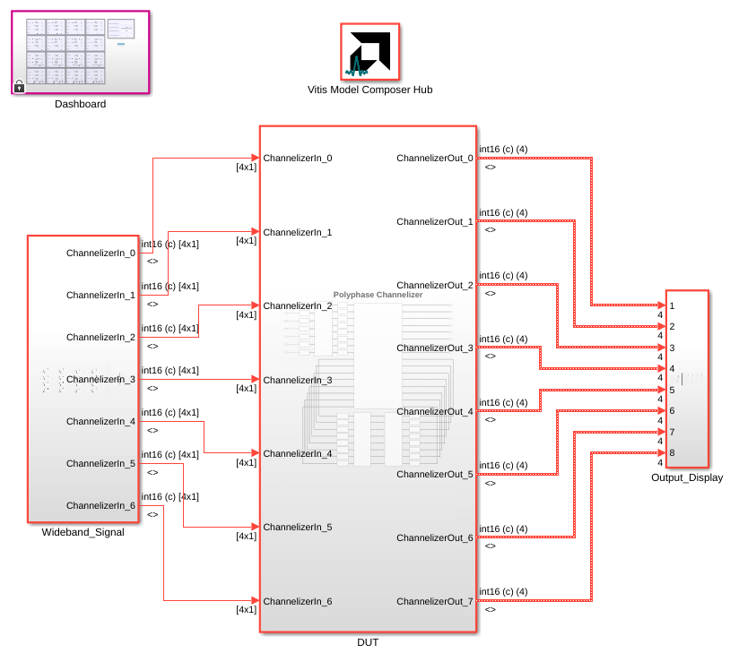
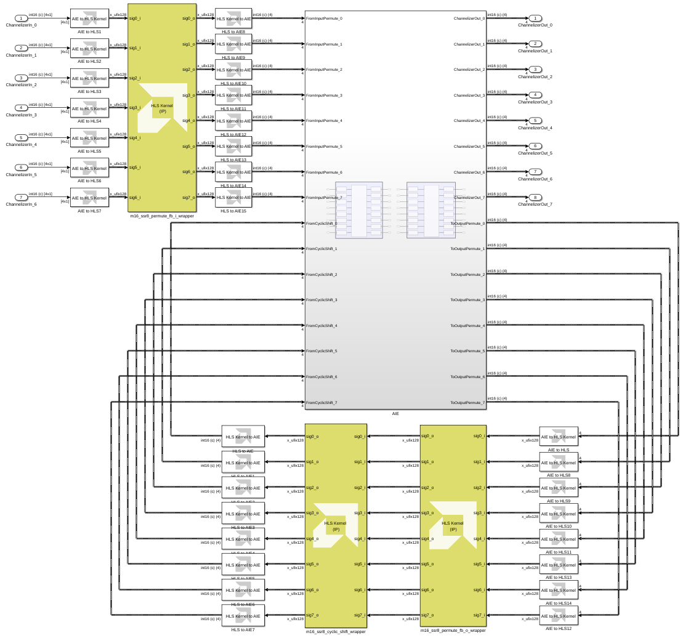
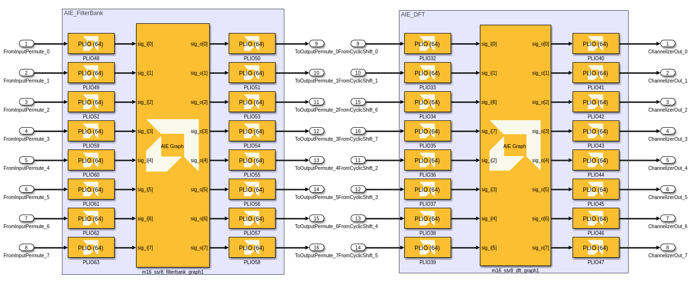
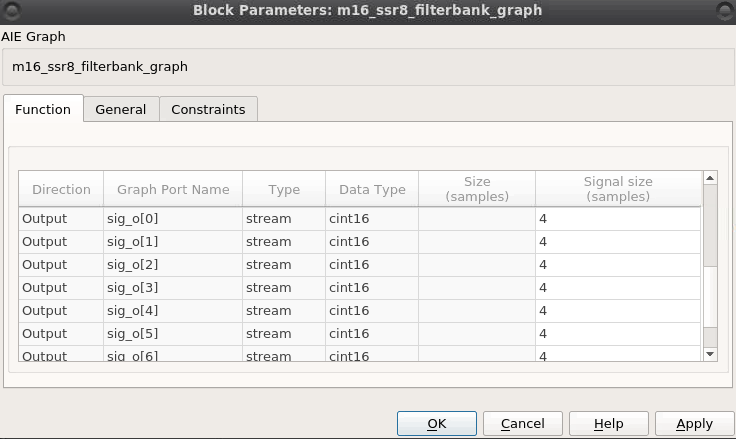
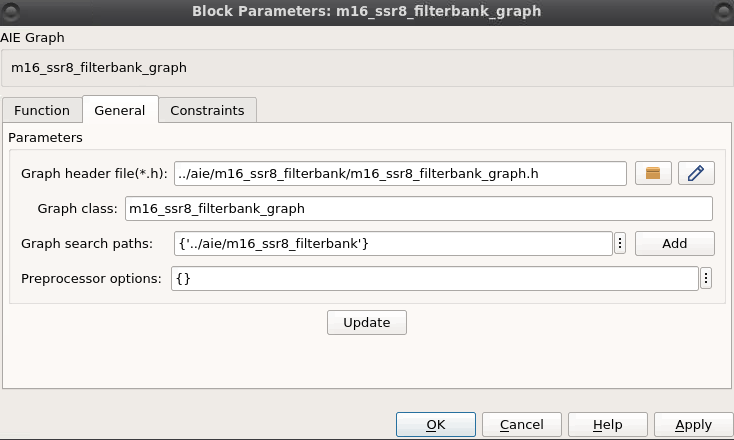
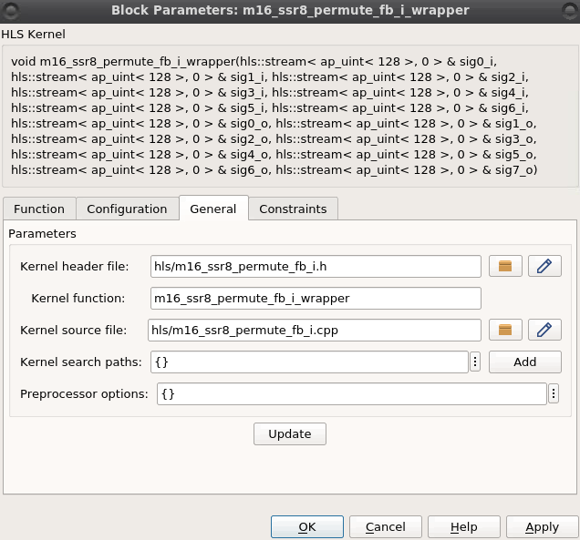
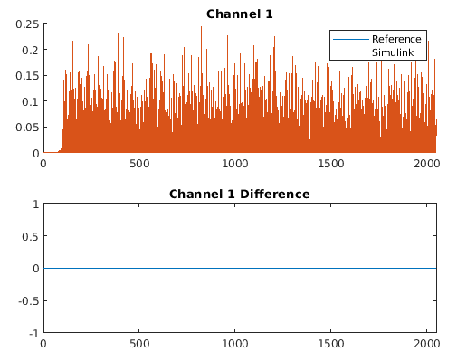
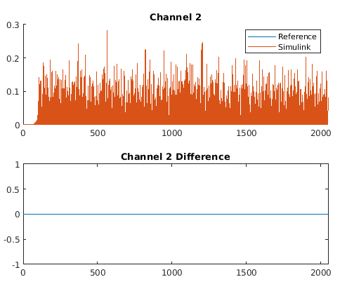

AI Engine DevelopmentSee Vitis™ Development Environment on xilinx.com See Vitis™ Model Composer Development Environment on xilinx.com |
Polyphase Channelizer
Version: Vitis Model Composer 2023.1
Table of Contents
- Introduction
- Channelizer Requirements
- Channelizer Implementation
- MATLAB Model
- Simulink Model
- Functional Verification
- Conclusion
Introduction
The polyphase channelizer [1] down-converts simultaneously a set of frequency-division multiplexed (FDM) channels carried in a single data stream using an
efficient approach based on digital signal processing. Channelizer use is ubiquitous in many wireless communications systems. Channelizer sampling rates increase
steadily as the capabilities of RF-DAC and RF-ADC technology advances, making them challenging to implement in high speed reconfigurable devices such as field programmable
gate arrays (FPGAs). This example implements a high-speed channelizer design using a combination of AI Engine and Programmable Logic (PL) resources in Versal devices.
To aid in simulation and verification, the AI Engine and Programmable Logic parts of the design are brought into Vitis Model Composer, which enables functional simulation of the AI Engine and PL components together.
Channelizer Requirements
The table below shows the system requirements for the polyphase channelizer. The input sampling rate is 10.5 Gsps. The design supports M=16 channels with each one supporting 10.5G / 16 = 656.25 MHz of bandwidth. The channelizer employs a polyphase technique as outlined in [1] to achieve an oversampled output at a rate of P/Q = 8/7 times the channel bandwidth, or 656.25 * 8/7 = 750 Msps. The prototype filter used by the channelizer uses K=8 taps per phase, leading to a total of 16 x 8 = 128 taps overall.
| Parameter | Value | Units |
|---|---|---|
| Input Sampling Rate (Fs) | 10.5 | Gsps |
| # of Channels (M) | 16 | channels |
| Interpolation Factor (P) | 8 | n/a |
| Decimation Factor (Q) | 7 | n/a |
| Channel Bandwidth | 656.25 | MHz |
| Output Sampling Rate | 750 | Msps |
| # of taps per phase (K) | 8 | n/a |
Polyphase Channelizer System Requirements.
Channelizer Implementation
The figure below shows a block diagram of the polyphase channelizer. The polyphase channelizer consists of the following functions:
- The Circular Buffer converts the scalar input data stream into an M-vector output format for the downstream blocks, and introduces state to manage the P/Q output oversampling.
- The Polyphase Filter implements a parallel bank of M filters, each with K = 8 coefficients. The filter produces a single vector of M output samples.
- The Cyclic Shift Buffer removes frequency-dependent phase shifts from the downstream Inverse Discrete Fourier Transform (IDFT) outputs using a memoryless and periodically time-varying circular shift of its inputs.
- The Inverse Fast Fourier Transform (IFFT) performs an IDFT operation on its input vector of M samples to produce a transformed vector of output samples. Each IDFT output represents a separate down-converted channel of bandwidth Fs / M sampled at a rate of Fs / M * P / Q samples per second.

Polyphase Channelizer Block Diagram.
For a more detailed description of the implementation, refer to Polyphase Channelizer in Vitis-Tutorials.
The remainder of this example will focus on how to bring the polyphase channelizer implementation into Vitis Model Composer and simulate it.
MATLAB Model
The figure below shows a system model of the polyphase channelizer built in MATLAB and encapsulated in a MATLAB app. This provides a comprehensive golden model of the channelizer algorithms and illustrates the relationships between the various system parameters. The model was built to support a broader range of parameter settings than the actual Versal design:
- The model supports two different input sampling rates, Fs = 10.5 Gsps and Fs = 20.5 Gsps.
- The number of channels M may be set to 16, 32, 64, or 128 using a dial.
- The output oversampling ratio P/Q may be set to 1/1, 2/1, 4/3, or 8/7 using the appropriate button.
- The number of active channels may be entered in the bottom left. This value must be less than the chosen value of M.

Polyphase Channelizer system model implemented as a MATLAB app.
To run the MATLAB polyphase channelizer model:
Navigate to the app folder.
Run
channelizer.Specify the Oversampling Ratio, Number of Channels, Sampling Frequency, and Number Active according to the figure above.
Click Go.
When this occurs, the model generates the desired number of active channels and positions them in randomly chosen carrier locations. Each signal is modeled as filtered Gaussian noise for simplicity. The model displays the impulse response of the prototype channelizer filter computed for the given system parameters in the top left plot. The bottom left plot shows this same filter in the frequency domain in red along with the actual signal to be extracted by the channelizer in blue. The top right plot shows the input spectrum to the channelizer along with the active carriers and their index labels. The bottom right plot shows the extracted channels at baseband in the time domain, where the blue signals are the channelizer inputs (delayed by the known group delay of the channelizer) and the red signals are the channelizer outputs.
Simulink Model
To aid in simulation and verification, the AI Engine graph code and HLS kernel code are brought into Vitis Model Composer, which enables functional simulation of the AI Engine and PL components together.
Open the Simulink model
Channelizer.slx.Press Ctrl+D to update the model and display signal dimensions and data types.

The inputs and outputs of the channelizer are 16 bits wide with 15 bits of fractional precision. The floating-point channelizer inputs from the MATLAB workspace are scaled by 2^15 and converted to an int16 data type. The channelizer outputs are scaled by 2^-15 to convert back to floating-point precision before being written to the MATLAB workspace.
Note also that the inputs and outputs are 4 elements wide. This is because 128 bits of data (4 complex int16 samples) can be transferred to and from the design on each stream and sample.
- Double-click on the Channelizer subsystem.

The model shows the partitioning of the design between the AI Engine and PL. The channelizer input enters the input permute HLS Kernel at the upper-left, then proceeds into the AI Engine for polyphase filter processing. The polyphase filter output is routed back to the PL for the output permute and cyclic shift operations. The cyclic shift output is routed back to the AI Engine for the DFT operation, from which the output exits the channelizer.
Note the use of AIE to HLS and HLS to AIE blocks before and after the HLS kernels. The HLS kernels' inputs and outputs are 128 bits wide, so these blocks convert between a 4-element cint16 vector (recognized by the AI Engine) and a single uint128 value.
AI Engine Implementation
The polyphase filter and DFT implementation are implemented as separate AI Engine graphs. The graph code for each has been brought in to Vitis Model Composer using the AIE Graph block.
- Double-click on the AIE subsystem.

Each input and output stream has a 64-bit PLIO. This means that 2 cint16 samples are transferred on each stream during each clock cycle. To achieve high throughput, the AI Engine design is implemented using a Super Sample Rate (SSR) parallel architecture. Refer to Polyphase Channelizer in Vitis-Tutorials for further details on the parallel architecture.
- Double-click on the m16ssr8filterbank_graph block.

Note that each output has a Signal size of 4 cint16 samples. This means that the kernel's output will be available to Simulink once 4 samples are available in the kernel's output buffer.
- Click on the General tab.

This tab provides the path to the AI Engine graph code for the polyphase channelizer's filter bank. Click the icon next to the path to view the graph source code.
- Click Cancel to close the window without making changes.
Optionally, you can double-click on the m16ssr8dft_graph block to observe that it is configured similarly to the filter bank.
Programmable Logic (PL) Implementation
The PL portion of the polyphase channelizer design contains 3 IPs that perform the following functions:
- Input Circular Buffer
- Output Permute
- Cyclic Shift Buffer
These functions are explained in greater detail in Polyphase Channelizer.
These blocks are implemented in PL using HLS @ 312.5 MHz. With 4 samples transferred in each PL clock cycle, the AI Engine is able to operate at a rate of 1250 MHz.
Each function is imported into Vitis Model Composer using the HLS Kernel block.
Return up to the Channelizer subsystem.
Double-click on the m16ssr8permutefbi_wrapper block, which implements the Input Circular Buffer.

Note that each output has a Signal size of 1 uint128 sample. As mentioned earlier, this corresponds to 4 cint16 samples.
- Click on the General tab.

This tab provides the path to the HLS source code for the input circular buffer kernel. Click the icon next to the path to view the kernel source code.
- Click Cancel to close the window without making changes.
Optionally, you can double-click on the two remaining HLS Kernel blocks to observe that they are configured similarly.
Functional Verification
A MATLAB script has been provided as a test bench to generate channelizer inputs, execute the Simulink model, and compare the Simulink model's implementation to the MATLAB golden reference implementation.
Open the
Channelizer.mlxMATLAB script.On the MATLAB toolstrip, click Run and Advance:
This executes the first 3 steps of the testbench: Preparation, Initialize the Channelizer Model, and Create Testbench Stimulus. The end result is that the channelizer is simulated in MATLAB, and reference input and output vectors are saved in the MATLAB workspace under the variable channelizer.
- On the MATLAB toolstrip, click Run Section:
This executes the next step of the testbench, which is to run the Simulink model. The input streams are pulled from the workspace variable channelizer and the output streams are written to the workspace variable out.
Wait until the Simulink model is finished executing before proceeding to the next step.
Click the code section labeled Check Simulink Outputs against MATLAB Reference, then click Run Section.
This section compares the Simulink output and MATLAB reference for each stream. If the outputs match, this means the Simulink model (and therefore the AI Engine and HLS code implementations) match the MATLAB golden reference.
 
Conclusion
This example showcased the following capabilities of Vitis Model Composer for Versal development:
- Import AI Engine and HLS source code into Vitis Model Composer.
- Model data exchange between AI Engine and PL in simulation.
- Simulate AI Engine and PL together in a single design.
4. Compare a Versal hardware code implementation to a MATLAB golden reference.
References
[1] F.J. Harris et. al., "Digital Receivers and Transmitter Using Polyphase Filter Banks for Wireless Communications", IEEE Transactions on Microwave Theory and Techniques, Vol. 51, No. 4, April 2003.
Copyright (c) 2023 Advanced Micro Devices, Inc.
Licensed under the Apache License, Version 2.0 (the "License");
you may not use this file except in compliance with the License.
You may obtain a copy of the License at
http://www.apache.org/licenses/LICENSE-2.0
Unless required by applicable law or agreed to in writing, software
distributed under the License is distributed on an "AS IS" BASIS,
WITHOUT WARRANTIES OR CONDITIONS OF ANY KIND, either express or implied.
See the License for the specific language governing permissions and
limitations under the License.